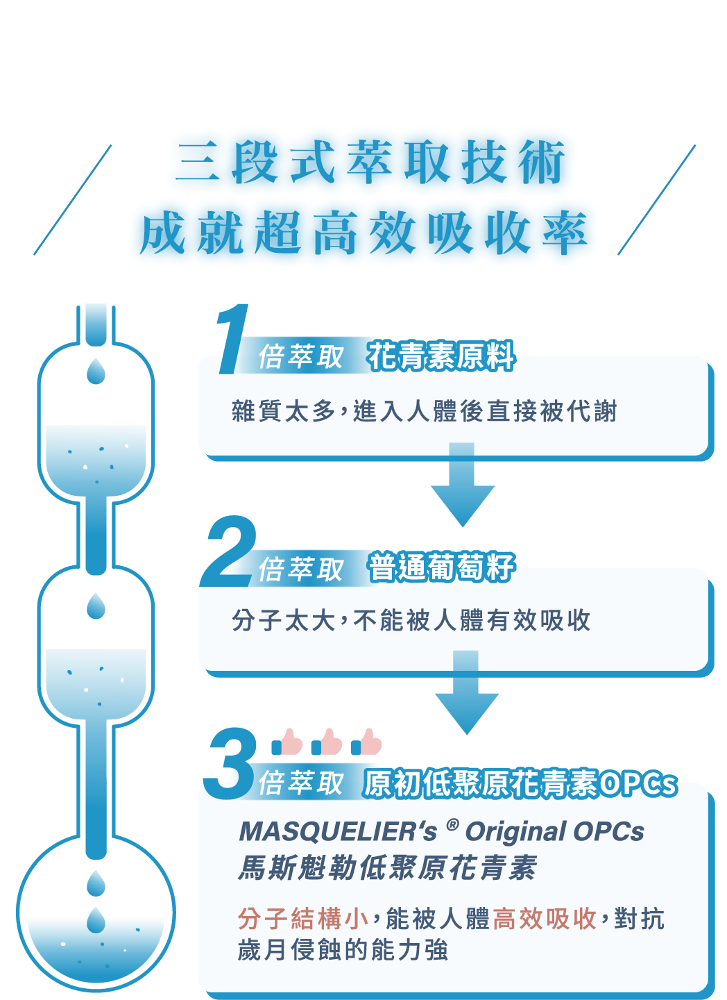

什麼是葡萄籽？
葡萄籽，全名為「葡萄籽萃取物」(grape seed extract)，是從葡萄果實中提取的一種天然物質。它富含多種生物活性成分，尤其是低聚原花青素(OPCs)和多酚類物質，這些成分被認為對人體健康有諸多益處。
葡萄籽的歷史可以追溯到古希臘時期，當時人們就已經認識到葡萄的健康價值。但直到20世紀70年代，科學家才開始深入研究葡萄籽的營養成分，並發現了其驚人的抗氧化能力。自那時起，葡萄籽逐漸成為營養補充品市場的新寵兒。
《月光寶盒》的Anthogenol葡萄籽原花青素膠囊，和一般葡萄籽萃取物其實有很大的不同，屬於「低聚原花青素」，必須有特殊專利技術才有辦法萃取出來，是更小分子的葡萄籽萃取物，有更好的吸收效果。
葡萄籽功效驚人
葡萄籽的功效多元且強大，這也是為什麼越來越多人關注葡萄籽怎麼吃的原因。以下是葡萄籽的主要功效：
葡萄籽功效 1. 超強抗氧化
葡萄籽中的OPCs抗氧化能力極強，是維生素C的20倍，維生素E的50倍。這有助於對抗自由基，延緩衰老。OPCs能夠穿透細胞膜，直接在細胞內發揮抗氧化作用，保護細胞免受氧化損傷。葡萄籽功效 2. 養顏美容：
葡萄籽能促進膠原蛋白生成，改善肌膚彈性，減少皺紋，被稱為「吃的保養品」；還能幫助肌膚抵抗紫外線傷害，預防黑色素沉澱，維持肌膚白皙透亮。葡萄籽怎麼吃？正確食用方法大公開
葡萄籽怎麼吃才能充分吸收其營養？以下是幾種常見的葡萄籽食用方法：